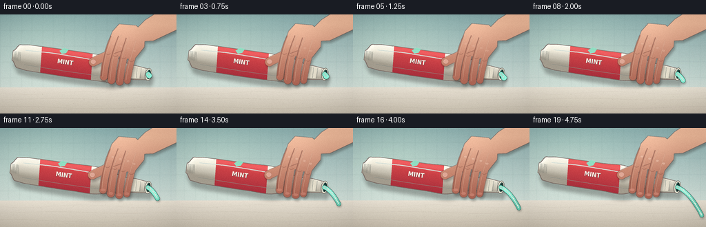
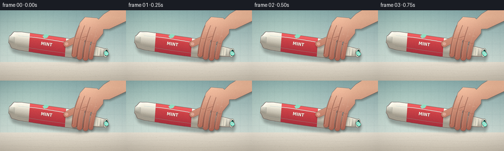

CODING AGENTS AS PIXEL WORLD MODELS
traex/DeepSeek-V4.1-Flash · phygen_014
点击播放 · 原生 RGB 像素
逐轮保存的候选
回放视频、检查图与代码变化。
每份候选均可单独播放。实际图片检查记录在下方工具轨迹中。
候选 01播放与检查图
点击播放 · 原生 RGB 像素

展开代码变化
--- 上一保存版本
+++ 本次保存版本
@@ -0,0 +1,596 @@
+from pathlib import Path
+
+import numpy as np
+from PIL import Image, ImageChops, ImageDraw, ImageFilter, ImageFont
+
+import artifact_io
+
+
+W, H = 256, 144
+N, FPS = 20, 4.0
+SS = 4
+
+
+def sc(value):
+ return int(round(value * SS))
+
+
+def mix(a, b, amount):
+ return tuple(int(round(a[i] + (b[i] - a[i]) * amount)) for i in range(3))
+
+
+def smoothstep(edge0, edge1, value):
+ t = np.clip((value - edge0) / (edge1 - edge0), 0.0, 1.0)
+ return t * t * (3.0 - 2.0 * t)
+
+
+def capsule(draw, points, width, fill):
+ pts = [(sc(x), sc(y)) for x, y in points]
+ draw.line(pts, fill=fill, width=sc(width), joint="curve")
+ radius = width / 2
+ for x, y in (points[0], points[-1]):
+ draw.ellipse(
+ (sc(x - radius), sc(y - radius), sc(x + radius), sc(y + radius)),
+ fill=fill,
+ )
+
+
+def polygon(draw, points, fill):
+ draw.polygon([(sc(x), sc(y)) for x, y in points], fill=fill)
+
+
+def bezier_points(points, steps=28):
+ p0, p1, p2, p3 = [np.asarray(point, dtype=float) for point in points]
+ result = []
+ for t in np.linspace(0.0, 1.0, steps):
+ p = (
+ (1 - t) ** 3 * p0
+ + 3 * (1 - t) ** 2 * t * p1
+ + 3 * (1 - t) * t**2 * p2
+ + t**3 * p3
+ )
+ result.append(tuple(p))
+ return result
+
+
+def add_vignette(image):
+ arr = np.asarray(image, dtype=np.float32)
+ yy, xx = np.mgrid[0 : arr.shape[0], 0 : arr.shape[1]]
+ nx = (xx / (arr.shape[1] - 1) - 0.5) / 0.5
+ ny = (yy / (arr.shape[0] - 1) - 0.5) / 0.5
+ radius = np.sqrt(nx * nx * 0.58 + ny * ny * 0.42)
+ vignette = np.clip(1.0 - 0.20 * np.maximum(radius - 0.45, 0.0) ** 1.6, 0.78, 1.0)
+ arr *= vignette[..., None]
+ return Image.fromarray(np.clip(arr, 0, 255).astype(np.uint8), "RGB")
+
+
+def make_background(frame_index):
+ width, height = W * SS, H * SS
+ yy, xx = np.mgrid[0:height, 0:width]
+ y = yy / SS
+ x = xx / SS
+
+ top = np.array([129, 164, 165], dtype=np.float32)
+ bottom = np.array([206, 220, 213], dtype=np.float32)
+ blend = np.clip(y / 107.0, 0, 1)[..., None]
+ arr = top * (1 - blend) + bottom * blend
+
+ glow = np.exp(-(((x - 62) / 96.0) ** 2 + ((y - 35) / 55.0) ** 2))
+ arr += glow[..., None] * np.array([19, 18, 12], dtype=np.float32)
+
+ background = Image.fromarray(np.clip(arr, 0, 255).astype(np.uint8), "RGB")
+ overlay = Image.new("RGBA", background.size, (0, 0, 0, 0))
+ draw = ImageDraw.Draw(overlay)
+
+ tile_w, tile_h = 31, 23
+ for offset in (0, tile_w // 2):
+ start_x = -tile_w + offset
+ for xline in np.arange(start_x, W + tile_w, tile_w):
+ draw.line(
+ [(sc(xline), 0), (sc(xline), sc(108))],
+ fill=(42, 76, 75, 22),
+ width=max(1, sc(0.45)),
+ )
+ for yline in np.arange(-tile_h, 110, tile_h):
+ draw.line(
+ [(0, sc(yline)), (sc(W), sc(yline))],
+ fill=(45, 75, 74, 24),
+ width=max(1, sc(0.45)),
+ )
+ draw.line([(0, sc(107)), (sc(W), sc(107))], fill=(77, 92, 86, 90), width=sc(1.1))
+
+ background = Image.alpha_composite(background.convert("RGBA"), overlay).convert("RGB")
+ background = background.filter(ImageFilter.GaussianBlur(radius=0.55 * SS))
+
+ # The foreground counter has a separate, warmer material.
+ counter = Image.new("RGBA", background.size, (0, 0, 0, 0))
+ cdraw = ImageDraw.Draw(counter)
+ for row in range(sc(106), height):
+ yv = row / SS
+ t = np.clip((yv - 106) / 38.0, 0, 1)
+ color = mix((229, 222, 208), (196, 187, 171), float(t))
+ cdraw.line([(0, row), (width, row)], fill=color + (255,))
+
+ # Soft marble veins.
+ vein_layer = Image.new("RGBA", background.size, (0, 0, 0, 0))
+ vdraw = ImageDraw.Draw(vein_layer)
+ for k, (base_y, amp, phase) in enumerate(
+ [(114, 2.0, 0.2), (123, 1.3, 2.1), (135, 1.8, 4.0)]
+ ):
+ pts = []
+ for px in np.linspace(-10, 266, 90):
+ py = base_y + amp * np.sin(px / (27 + 5 * k) + phase)
+ pts.append((sc(px), sc(py)))
+ vdraw.line(pts, fill=(124, 113, 96, 22 + 5 * k), width=max(1, sc(0.55)))
+ counter = Image.alpha_composite(counter, vein_layer)
+ background = Image.alpha_composite(background.convert("RGBA"), counter).convert("RGB")
+
+ # A few restrained countertop flecks keep the surface from reading as flat color.
+ rng = np.random.default_rng(1407)
+ flecks = Image.new("RGBA", background.size, (0, 0, 0, 0))
+ fdraw = ImageDraw.Draw(flecks)
+ for _ in range(70):
+ fx = rng.uniform(0, W)
+ fy = rng.uniform(109, H)
+ alpha = int(rng.integers(7, 24))
+ size = rng.uniform(0.25, 0.75)
+ fdraw.ellipse(
+ (sc(fx - size), sc(fy - size), sc(fx + size), sc(fy + size)),
+ fill=(104, 95, 80, alpha),
+ )
+ background = Image.alpha_composite(background.convert("RGBA"), flecks).convert("RGB")
+
+ # Exposure breathes only slightly, preserving a stable timelapse viewpoint.
+ exposure = 1.0 + 0.012 * frame_index / (N - 1)
+ return add_vignette(background.point(lambda v: min(255, int(v * exposure))))
+
+
+def tube_half_width(x, squeeze):
+ if x < 27:
+ width = 6.5 + 10.0 * smoothstep(18, 27, x)
+ elif x < 42:
+ width = 16.5 + 1.7 * smoothstep(27, 42, x)
+ elif x < 158:
+ width = 18.2 + 0.7 * np.sin((x - 42) / 116 * np.pi)
+ elif x < 194:
+ width = 18.9 - 9.2 * smoothstep(158, 194, x)
+ else:
+ width = 9.7 - 2.2 * smoothstep(194, 218, x)
+
+ if x < 194:
+ pinch = 8.4 * squeeze * np.exp(-((x - 169.0) / 17.0) ** 2)
+ swell = squeeze * (
+ 1.7 * np.exp(-((x - 135.0) / 15.0) ** 2)
+ + 1.0 * np.exp(-((x - 191.0) / 9.0) ** 2)
+ )
+ width += swell - pinch
+ return max(5.0, width)
+
+
+def tube_axis_points(squeeze):
+ xs = np.linspace(18, 218, 360)
+ centers = 55.0 + 0.6 * np.sin((xs - 18) / 200 * np.pi)
+ half_widths = np.array([tube_half_width(float(x), squeeze) for x in xs])
+ upper = [(float(x), float(c - w)) for x, c, w in zip(xs, centers, half_widths)]
+ lower = [(float(x), float(c + w)) for x, c, w in zip(xs, centers, half_widths)][::-1]
+ return xs, centers, half_widths, upper + lower
+
+
+def make_tube_layer(frame_index):
+ squeeze = (frame_index / (N - 1)) ** 1.35
+ layer_w, layer_h = 260, 110
+ size = (layer_w * SS, layer_h * SS)
+ layer = Image.new("RGBA", size, (0, 0, 0, 0))
+
+ xs, centers, half_widths, outline_points = tube_axis_points(squeeze)
+ body_mask = Image.new("L", size, 0)
+ mask_draw = ImageDraw.Draw(body_mask)
+ polygon(mask_draw, outline_points, 255)
+
+ yy, xx = np.mgrid[0 : size[1], 0 : size[0]]
+ local_x = xx / SS
+ local_y = yy / SS
+ nearest = np.clip(np.rint(local_x - 18).astype(int), 0, len(xs) - 1)
+ local_hw = half_widths[nearest]
+ local_c = centers[nearest]
+ v = np.clip((local_y - local_c) / np.maximum(local_hw, 1.0), -1.0, 1.0)
+
+ top_color = np.array([255, 252, 239], dtype=np.float32)
+ center_color = np.array([244, 240, 224], dtype=np.float32)
+ lower_color = np.array([177, 170, 154], dtype=np.float32)
+ blend = np.clip((v + 1.0) / 2.0, 0, 1)[..., None]
+ lower_mix = np.clip(blend * 1.32, 0, 1)
+ body = top_color * (1 - lower_mix) + lower_color * lower_mix
+ lower_shadow = np.clip(blend * 1.32, 0, 1)
+ body = body * (1 - 0.30 * np.maximum(lower_shadow - 0.72, 0))
+ body += np.array([9, 9, 7], dtype=np.float32) * np.exp(
+ -((v + 0.55) / 0.24) ** 2
+ )[..., None]
+ body = np.clip(body, 0, 255).astype(np.uint8)
+ body_img = Image.fromarray(body, "RGB").convert("RGBA")
+ body_img.putalpha(body_mask)
+ layer = Image.alpha_composite(layer, body_img)
+
+ # Coral central band, shaped with the same silhouette.
+ band_mask = Image.new("L", size, 0)
+ band_draw = ImageDraw.Draw(band_mask)
+ polygon(
+ band_draw,
+ [(57, 20), (131, 20), (136, 92), (62, 92)],
+ 255,
+ )
+ band_mask = ImageChops.multiply(band_mask, body_mask)
+ band = np.empty((size[1], size[0], 3), dtype=np.uint8)
+ band_top = np.array([231, 79, 79], dtype=np.float32)
+ band_low = np.array([155, 41, 56], dtype=np.float32)
+ band_blend = np.clip((local_y - 31) / 52.0, 0, 1)[..., None]
+ band_arr = band_top * (1 - band_blend) + band_low * band_blend
+ band_arr += 22 * np.exp(-((local_y - 40) / 5.0) ** 2)[..., None]
+ band[:] = np.clip(band_arr, 0, 255).astype(np.uint8)
+ band_img = Image.fromarray(band, "RGB").convert("RGBA")
+ band_img.putalpha(band_mask)
+ layer = Image.alpha_composite(layer, band_img)
+
+ draw = ImageDraw.Draw(layer)
+
+ # Fine crimp teeth at the sealed end.
+ for x in np.arange(19.5, 29.0, 1.8):
+ draw.line(
+ [(sc(x), sc(48.5)), (sc(x + 0.8), sc(61.5))],
+ fill=(116, 103, 90, 125),
+ width=max(1, sc(0.55)),
+ )
+
+ # Product label sits inside the coral band.
+ font_path = "/usr/share/fonts/truetype/dejavu/DejaVuSansCondensed-Bold.ttf"
+ font = ImageFont.truetype(font_path, sc(9.0))
+ label = "MINT"
+ bbox = draw.textbbox((0, 0), label, font=font)
+ tw, th = bbox[2] - bbox[0], bbox[3] - bbox[1]
+ tx, ty = sc(94.5) - tw / 2, sc(53.0) - th / 2 - sc(0.7)
+ draw.text((tx + sc(0.55), ty + sc(0.55)), label, font=font, fill=(93, 23, 38, 150))
+ draw.text((tx, ty), label, font=font, fill=(255, 249, 232, 245))
+
+ # A small mint leaf above the wordmark.
+ leaf = [(84, 39), (90, 34), (97, 35), (94, 41), (88, 43)]
+ polygon(draw, leaf, (142, 225, 195, 235))
+ draw.line([(86, 41), (96, 36)], fill=(37, 119, 99, 210), width=max(1, sc(0.55)))
+
+ # Broad specular stroke and a warm reflected edge give the plastic volume.
+ draw.line(
+ [(sc(35), sc(45)), (sc(74), sc(43.5)), (sc(119), sc(44.4)), (sc(158), sc(46))],
+ fill=(255, 255, 247, 150),
+ width=sc(1.55),
+ )
+ draw.line(
+ [(sc(36), sc(66)), (sc(91), sc(67)), (sc(145), sc(67.3)), (sc(181), sc(61))],
+ fill=(111, 92, 81, 80),
+ width=sc(0.8),
+ )
+
+ # Pinch creases become darker as the hand closes.
+ crease_alpha = int(80 + 80 * squeeze)
+ for x, lean in ((160, -1.0), (168, 0.5), (176, 1.5)):
+ draw.line(
+ [(sc(x), sc(43)), (sc(x + lean), sc(55)), (sc(x - 0.5), sc(66))],
+ fill=(113, 92, 80, crease_alpha),
+ width=max(1, sc(0.55)),
+ )
+
+ # Shoulder, threaded neck, and open lip.
+ draw.polygon(
+ [(sc(190), sc(46)), (sc(204), sc(47.5)), (sc(204), sc(62.5)), (sc(190), sc(64))],
+ fill=(226, 220, 202, 255),
+ )
+ for x in (199.0, 205.0, 211.0):
+ draw.line(
+ [(sc(x), sc(47.4)), (sc(x + 0.5), sc(62.4))],
+ fill=(113, 109, 98, 145),
+ width=max(1, sc(0.62)),
+ )
+ draw.ellipse(
+ (sc(211.7), sc(45.7), sc(221.5), sc(64.3)),
+ fill=(229, 224, 207, 255),
+ outline=(99, 91, 81, 210),
+ width=max(1, sc(0.65)),
+ )
+ draw.ellipse(
+ (sc(214.0), sc(48.3), sc(220.0), sc(61.5)),
+ fill=(27, 55, 53, 255),
+ )
+ draw.arc(
+ (sc(214.3), sc(49.0), sc(219.8), sc(61.0)),
+ 95,
+ 260,
+ fill=(117, 205, 181, 210),
+ width=max(1, sc(0.55)),
+ )
+
+ # Product silhouette outline, kept delicate at the final resolution.
+ expanded = body_mask.filter(ImageFilter.MaxFilter(2 * sc(0.7) + 1))
+ edge = ImageChops.subtract(expanded, body_mask)
+ edge_layer = Image.new("RGBA", size, (106, 78, 73, 180))
+ edge_layer.putalpha(edge.point(lambda p: int(p * 0.72)))
+ layer = Image.alpha_composite(edge_layer, layer)
+ return layer
+
+
+def skin_layer(frame_index):
+ squeeze = (frame_index / (N - 1)) ** 1.55
+ size = (W * SS, H * SS)
+ mask = Image.new("L", size, 0)
+ draw = ImageDraw.Draw(mask)
+
+ # The hand enters from the upper right and closes over the front of the tube.
+ shift_x = 0.8 * squeeze
+ shift_y = 0.6 * squeeze
+ polygon(
+ draw,
+ [
+ (258 + shift_x, -10),
+ (235 + shift_x, -7),
+ (211 + shift_x, 8 + shift_y),
+ (196 + shift_x, 23 + shift_y),
+ (201 + shift_x, 39 + shift_y),
+ (222 + shift_x, 38 + shift_y),
+ (258 + shift_x, 21 + shift_y),
+ ],
+ 255,
+ )
+ polygon(
+ draw,
+ [
+ (173 + shift_x, 14 + shift_y),
+ (197 + shift_x, 16 + shift_y),
+ (210 + shift_x, 28 + shift_y),
+ (209 + shift_x, 47 + shift_y),
+ (197 + shift_x, 62 + shift_y),
+ (181 + shift_x, 65 + shift_y),
+ (165 + shift_x, 57 + shift_y),
+ (158 + shift_x, 43 + shift_y),
+ (163 + shift_x, 25 + shift_y),
+ ],
+ 255,
+ )
+
+ finger_paths = [
+ bezier_points([(167, 29), (159, 45), (152, 67), (150.5, 90.5)]),
+ bezier_points([(178, 30), (169, 48), (163, 70), (161.5, 95.5)]),
+ bezier_points([(189, 33), (181, 52), (175, 73), (173.5, 97.5)]),
+ bezier_points([(199, 38), (193, 57), (187, 77), (184.5, 96.0)]),
+ ]
+ finger_widths = [10.0, 10.7, 10.4, 9.0]
+ for path, width in zip(finger_paths, finger_widths):
+ shifted = [(x + shift_x, y + shift_y) for x, y in path]
+ capsule(draw, shifted, width, 255)
+
+ thumb = bezier_points([(181, 50), (166, 55), (149, 62), (135, 69)])
+ thumb = [(x + shift_x, y + shift_y) for x, y in thumb]
+ capsule(draw, thumb, 12.2, 255)
+
+ mask = mask.filter(ImageFilter.GaussianBlur(radius=0.22 * SS))
+ yy, xx = np.mgrid[0 : size[1], 0 : size[0]]
+ x = xx / SS
+ y = yy / SS
+ top_skin = np.array([236, 183, 151], dtype=np.float32)
+ low_skin = np.array([173, 100, 83], dtype=np.float32)
+ blend = np.clip((y - 15) / 89.0, 0, 1)[..., None]
+ skin = top_skin * (1 - blend) + low_skin * blend
+ side_light = np.clip((x - 135) / 110.0, 0, 1)[..., None]
+ skin -= side_light * np.array([17, 13, 10], dtype=np.float32)
+ skin += 15 * np.exp(-(((x - 173) / 38) ** 2 + ((y - 28) / 26) ** 2))[..., None]
+ rng = np.random.default_rng(71 + frame_index)
+ noise = rng.normal(0, 1.8, (size[1], size[0], 1))
+ skin = np.clip(skin + noise, 0, 255).astype(np.uint8)
+ skin_img = Image.fromarray(skin, "RGB").convert("RGBA")
+ skin_img.putalpha(mask)
+
+ hand = skin_img
+ shade = Image.new("RGBA", size, (0, 0, 0, 0))
+ sdraw = ImageDraw.Draw(shade)
+
+ # Finger separations and knuckle shadows.
+ separation_paths = [
+ bezier_points([(161, 31), (154, 48), (148, 68), (147, 89)]),
+ bezier_points([(172, 31), (164, 50), (158, 71), (156, 94)]),
+ bezier_points([(183, 34), (176, 54), (170, 75), (169, 96)]),
+ ]
+ for path in separation_paths:
+ pts = [(sc(px + shift_x), sc(py + shift_y)) for px, py in path]
+ sdraw.line(pts, fill=(99, 49, 43, 105), width=sc(1.15), joint="curve")
+
+ for path in finger_paths:
+ shifted = [(x + shift_x, y + shift_y) for x, y in path]
+ highlight = [(x - 2.0, y) for x, y in shifted]
+ sdraw.line(
+ [(sc(x), sc(y)) for x, y in highlight],
+ fill=(255, 211, 182, 92),
+ width=sc(1.0),
+ joint="curve",
+ )
+ knuckle = shifted[13]
+ sdraw.arc(
+ (
+ sc(knuckle[0] - 3.4),
+ sc(knuckle[1] - 2.4),
+ sc(knuckle[0] + 3.4),
+ sc(knuckle[1] + 2.6),
+ ),
+ 10,
+ 160,
+ fill=(119, 63, 53, 80),
+ width=max(1, sc(0.65)),
+ )
+ if squeeze > 0.3:
+ pad = shifted[-1]
+ alpha = int(35 + 45 * squeeze)
+ sdraw.ellipse(
+ (sc(pad[0] - 3.4), sc(pad[1] - 2.2), sc(pad[0] + 3.4), sc(pad[1] + 2.0)),
+ fill=(255, 183, 164, alpha),
+ )
+
+ # Thumb crease and a restrained nail.
+ sdraw.line(
+ [(sc(176 + shift_x), sc(53 + shift_y)), (sc(165 + shift_x), sc(57 + shift_y))],
+ fill=(111, 56, 50, 100),
+ width=sc(0.9),
+ )
+ sdraw.ellipse(
+ (
+ sc(131.5 + shift_x),
+ sc(65.2 + shift_y),
+ sc(139.0 + shift_x),
+ sc(72.0 + shift_y),
+ ),
+ fill=(241, 190, 176, 150),
+ )
+ sdraw.arc(
+ (
+ sc(132.0 + shift_x),
+ sc(65.6 + shift_y),
+ sc(138.4 + shift_x),
+ sc(71.5 + shift_y),
+ ),
+ 75,
+ 255,
+ fill=(255, 229, 213, 130),
+ width=max(1, sc(0.5)),
+ )
+
+ # Compression whitening at the knuckles.
+ for x, y in [(164, 43), (175, 46), (186, 49), (195, 53)]:
+ alpha = int(28 + 62 * squeeze)
+ sdraw.ellipse(
+ (sc(x - 2.1 + shift_x), sc(y - 1.5 + shift_y), sc(x + 2.1 + shift_x), sc(y + 1.6 + shift_y)),
+ fill=(255, 223, 203, alpha),
+ )
+ shade = shade.filter(ImageFilter.GaussianBlur(radius=0.18 * SS))
+ hand = Image.alpha_composite(hand, shade)
+
+ # A thin contour anchors the hand against the bright product and wall.
+ expanded = mask.filter(ImageFilter.MaxFilter(2 * sc(0.55) + 1))
+ edge = ImageChops.subtract(expanded, mask)
+ contour = Image.new("RGBA", size, (95, 48, 42, 150))
+ contour.putalpha(edge.point(lambda p: int(p * 0.62)))
+ return Image.alpha_composite(contour, hand)
+
+
+def paste_path(length):
+ if length <= 0:
+ return []
+ samples = max(3, int(42 * length / 40.0))
+ start = np.array([215.0, 87.2])
+ points = []
+ for s in np.linspace(0, 1, samples):
+ px = start[0] + length * (0.87 * s)
+ py = start[1] + length * (0.24 * s + 0.76 * s**2)
+ py += 0.7 * np.sin(np.pi * s) * min(1.0, length / 10.0)
+ points.append((float(px), float(py)))
+ return points
+
+
+def make_paste(frame_index):
+ u = frame_index / (N - 1)
+ length = 1.3 + 38.7 * u**1.82
+ points = paste_path(length)
+ size = (W * SS, H * SS)
+ mask = Image.new("L", size, 0)
+ draw = ImageDraw.Draw(mask)
+ width = max(2.2, 6.7 - 1.8 * u)
+ capsule(draw, points, width, 255)
+ if length < 5:
+ x, y = points[-1]
+ draw.ellipse(
+ (sc(x - 3.8), sc(y - 3.2), sc(x + 3.8), sc(y + 3.8)),
+ fill=255,
+ )
+
+ yy, xx = np.mgrid[0 : size[1], 0 : size[0]]
+ x = xx / SS
+ y = yy / SS
+ arr = np.empty((size[1], size[0], 3), dtype=np.float32)
+ arr[:] = np.array([116, 213, 188], dtype=np.float32)
+ arr += 34 * np.exp(-(((x - 225) / 18.0) ** 2 + ((y - 91) / 14.0) ** 2))[..., None]
+ arr -= 24 * np.exp(-(((x - 236) / 22.0) ** 2 + ((y - 119) / 17.0) ** 2))[..., None]
+ paste = Image.fromarray(np.clip(arr, 0, 255).astype(np.uint8), "RGB").convert("RGBA")
+ paste.putalpha(mask)
+
+ draw = ImageDraw.Draw(paste)
+ centerline = [(sc(px), sc(py)) for px, py in points]
+ if len(centerline) > 1:
+ draw.line(centerline, fill=(222, 255, 238, 190), width=max(1, sc(1.15)), joint="curve")
+ for px, py in points[:: max(2, len(points) // 4)]:
+ draw.ellipse(
+ (sc(px - 0.7), sc(py - 1.2), sc(px + 0.9), sc(py + 0.3)),
+ fill=(249, 255, 241, 190),
+ )
+
+ expanded = mask.filter(ImageFilter.MaxFilter(2 * sc(0.55) + 1))
+ edge = ImageChops.subtract(expanded, mask)
+ outline = Image.new("RGBA", size, (26, 94, 82, 175))
+ outline.putalpha(edge.point(lambda p: int(p * 0.72)))
+ return Image.alpha_composite(outline, paste)
+
+
+def place_rotated(canvas, layer, center, angle, offset=(0, 0)):
+ rotated = layer.rotate(angle, resample=Image.Resampling.BICUBIC, expand=False)
+ left = sc(center[0] - layer.width / (2 * SS) + offset[0])
+ top = sc(center[1] - layer.height / (2 * SS) + offset[1])
+ canvas.alpha_composite(rotated, (left, top))
+
+
+def make_shadow(layer, offset, blur, opacity):
+ alpha = layer.getchannel("A").filter(ImageFilter.GaussianBlur(radius=blur * SS))
+ shadow = Image.new("RGBA", layer.size, (31, 29, 26, 0))
+ shadow.putalpha(alpha.point(lambda p: int(p * opacity)))
+ shifted = Image.new("RGBA", layer.size, (0, 0, 0, 0))
+ shifted.alpha_composite(shadow, (sc(offset[0]), sc(offset[1])))
+ return shifted
+
+
+def render_frame(frame_index):
+ background = make_background(frame_index).convert("RGBA")
+ squeeze = (frame_index / (N - 1)) ** 1.35
+
+ tube = make_tube_layer(frame_index)
+ tube_center = (129.5, 75.0)
+ tube_angle = -8.0
+ tube_shadow = make_shadow(tube, (3.5, 8.5), 2.5, 0.32)
+ place_rotated(background, tube_shadow, tube_center, tube_angle)
+ place_rotated(background, tube, tube_center, tube_angle)
+
+ hand = skin_layer(frame_index)
+ hand_shadow = make_shadow(hand, (2.0, 3.4), 1.6, 0.32)
+ background = Image.alpha_composite(background, hand_shadow)
+ background = Image.alpha_composite(background, hand)
+
+ paste = make_paste(frame_index)
+ paste_shadow = make_shadow(paste, (1.0, 2.0), 1.2, 0.28)
+ background = Image.alpha_composite(background, paste_shadow)
+ background = Image.alpha_composite(background, paste)
+
+ # Gentle camera push-in follows the increasing pressure without destabilizing the scene.
+ scale = 1.0 + 0.022 * (frame_index / (N - 1))
+ focal_x, focal_y = 151.0, 79.0
+ crop_w = int(round(W * SS / scale))
+ crop_h = int(round(H * SS / scale))
+ cx, cy = int(round(focal_x * SS)), int(round(focal_y * SS))
+ left = max(0, min(W * SS - crop_w, cx - crop_w // 2))
+ top = max(0, min(H * SS - crop_h, cy - crop_h // 2))
+ crop = background.crop((left, top, left + crop_w, top + crop_h))
+ frame = crop.convert("RGB").resize((W, H), Image.Resampling.LANCZOS)
+
+ arr = np.asarray(frame, dtype=np.int16)
+ rng = np.random.default_rng(900 + frame_index)
+ grain = rng.integers(-2, 3, size=(H, W, 1), dtype=np.int16)
+ arr = np.clip(arr + grain, 0, 255).astype(np.uint8)
+ return arr
+
+
+def main():
+ frames = np.stack([render_frame(i) for i in range(N)])
+ artifact_io.save(frames, Path(__file__).resolve().parent)
+
+
+if __name__ == "__main__":
+ main()
候选 02播放与检查图
点击播放 · 原生 RGB 像素

展开代码变化
--- 上一保存版本
+++ 本次保存版本
@@ -479,7 +479,7 @@
if length <= 0:
return []
samples = max(3, int(42 * length / 40.0))
- start = np.array([215.0, 87.2])
+ start = np.array([215.4, 49.0])
points = []
for s in np.linspace(0, 1, samples):
px = start[0] + length * (0.87 * s)
候选 03播放与检查图
可观测工具轨迹
实际执行的命令与返回图片。
命令 1exit 0
/bin/bash -c "pwd && rg --files -g 'prompt.txt' -g 'GENERATION_RULES.md' -g 'task_spec.json' -g '"'!node_modules'"'"
命令 2exit 0
/bin/bash -c 'git status --short'
命令 3exit 0
/bin/bash -c "find . -maxdepth 2 -type f -printf '%p\\n' | sort | head -200"
命令 4exit 0
/bin/bash -c 'cat prompt.txt'
命令 5exit 0
/bin/bash -c 'cat GENERATION_RULES.md'
命令 6exit 0
/bin/bash -c 'cat task_spec.json'
命令 7exit 0
/bin/bash -c "sed -n '1,240p' artifact_io.py"
命令 8exit 0
/bin/bash -c "sed -n '1,260p' player_template.html"
命令 9exit 0
/bin/bash -c 'command -v chafa || command -v viu || command -v jp2 || command -v img2txt || true'
命令 10exit 0
/bin/bash -c "python - <<'PY'
import numpy, PIL
print('numpy', numpy.__version__)
print('PIL', PIL.__version__)
PY"命令 11exit 0
/bin/bash -c 'fc-list | head -10'
命令 12exit 1
/bin/bash -c 'python generate.py'
命令 13exit 0
/bin/bash -c 'python generate.py'
命令 14exit 0
/bin/bash -c "python - <<'PY'
from PIL import Image
import numpy as np
for fi in [0,9,19]:
a=np.asarray(Image.open(f'frames/{fi:02d}.png').convert('RGB'))
# 4x4 average into 64x36; classify broad materials
b=a.reshape(36,4,64,4,3).mean((1,3)).astype(int)
chars=[]
for row in b:
line=''
for r,g,bl in row:
if g>r+18 and g>bl+5 and g>105: c='G' # mint paste
elif r>g+28 and r>bl+15 and r>115: c='R' # coral label
elif r>175 and g>155 and bl>130: c='C' # cream tube/counter
elif r>g+20 and g>70 and r>130: c='S' # skin
elif bl>g-3 and g>r+15 and g>110: c='T' # teal wall
elif (r+g+bl)/3<85: c='#'
else: c='.'
line+=c
chars.append(line)
print('\\nFRAME',fi)
print('\\n'.join(chars))
PY"命令 15exit 1
/bin/bash -c "python - <<'PY'
from PIL import Image, ImageDraw
import numpy as np
im=Image.new('L',(101,101)); ImageDraw.Draw(im).point((100,50),255)
for a in [-8,8,90]:
r=im.rotate(a,center=(50,50),fill=0)
yy,xx=np.unravel_index(np.argmax(np.asarray(r)),np.asarray(r).shape)
print(a,xx-50,yy-50)
PY"命令 16exit 0
/bin/bash -c "python - <<'PY'
from PIL import Image, ImageDraw
import numpy as np
im=Image.new('L',(101,101)); ImageDraw.Draw(im).point((100,50),255)
for a in [-8,8,90]:
r=im.rotate(a,center=(50,50))
yy,xx=np.unravel_index(np.argmax(np.asarray(r)),np.asarray(r).shape)
print(a,xx-50,yy-50)
PY"命令 17exit 0
/bin/bash -c "python - <<'PY'
from PIL import Image
import numpy as np
for fi in [0,19]:
a=np.asarray(Image.open(f'frames/{fi:02d}.png'))
r,g,b=a.transpose(2,0,1)
masks={
'coral':(r>150)&(g<110)&(b<115)&(r>g+60),
'cream':(r>190)&(g>185)&(b>160)&(abs(r.astype(int)-g)<20),
'mint':(g>140)&(g>r+25)&(g>b+3),
'skin':(r>150)&(r>g+18)&(g>b+12),
}
print('frame',fi)
for k,m in masks.items():
ys,xs=np.where(m)
print(k, len(xs), (xs.min(),ys.min(),xs.max(),ys.max()) if len(xs) else None)
PY"命令 18exit 0
/bin/bash -c 'python generate.py'
命令 19exit 1
/bin/bash -c "python - <<'PY'
from pathlib import Path
from PIL import Image, ImageDraw, ImageFont
import numpy as np, json
files=sorted(Path('frames').glob('*.png'))
print('frame_count',len(files),'sizes',sorted(set(Image.open(p).size for p in files)))
imgs=[Image.open(p).convert('RGB') for p in files]
# nearest-neighbor enlarged contact sheet of all frames, 4 columns
scale=2; cols=4; rows=(len(imgs)+cols-1)//cols; gap=8; label=14
sheet=Image.new('RGB',(cols*(256*scale+gap)+gap,rows*(144*scale+gap+label)+gap),(22,25,29))
d=ImageDraw.Draw(sheet); font=ImageFont.truetype('/usr/share/fonts/truetype/dejavu/DejaVuSans.ttf',11)
for i,im in enumerate(imgs):
x=gap+(i%cols)*(256*scale+gap); y=gap+(i//cols)*(144*scale+gap+label)
sheet.paste(im.resize((256*scale,144*scale),Image.Resampling.NEAREST),(x,y+label))
d.text((x,y),f'{i:02d} {i/4:.2f}s',font=font,fill=(220,228,230))
sheet.save('contact_sheet.png')
# quantify motion and paste area in an independent mint threshold
for i in [0,4,8,12,16,19]:
a=np.asarray(imgs[i]).astype(int); r,g,b=a[:,:,0],a[:,:,1],a[:,:,2]
m=(g>140)&(g>r+30)&(g>b+2)&(np.indices(g.shape)[1]>205)
print(i,'paste_pixels',int(m.sum()))
print('file_bytes', {p.name:p.stat().st_size for p in ['pixels.npz','index.html','inspection.png','transition_check.png']})
PY"命令 20exit 0
/bin/bash -c "python - <<'PY'
from pathlib import Path
from PIL import Image
import numpy as np, json
files=sorted(Path('frames').glob('*.png'))
print('frame_count',len(files),'sizes',sorted(set(Image.open(p).size for p in files)))
a=np.stack([np.asarray(Image.open(p)) for p in files])
print('frames_shape',a.shape,'dtype',a.dtype,'minmax',int(a.min()),int(a.max()))
print('mean_delta_first_last',float(np.abs(a[-1].astype(float)-a[0]).mean()))
print('adjacent_deltas',[round(float(np.abs(a[i+1].astype(float)-a[i]).mean()),2) for i in range(19)])
for name in ['pixels.npz','index.html','inspection.png','transition_check.png','contact_sheet.png']:
p=Path(name); print(name,p.stat().st_size)
print('png_missing', [i for i in range(20) if not (Path('frames')/f'{i:02d}.png').is_file()])
PY"命令 21exit 0
/bin/bash -c "python - <<'PY'
from PIL import Image
import numpy as np
for fi in [0,9,19]:
a=np.asarray(Image.open(f'frames/{fi:02d}.png')).astype(int)
# sample RGB grid for visual color audit
print('\\nframe',fi)
for y in range(10,141,10):
vals=[]
for x in range(10,251,20):
r,g,b=a[y,x]
vals.append(f'{r:02x}{g:02x}{b:02x}')
print(' '.join(vals))
PY"命令 22exit 0
/bin/bash -c "python - <<'PY'
import json, base64, re
from pathlib import Path
from PIL import Image
import numpy as np
root=Path('.')
spec=json.loads((root/'task_spec.json').read_text())
html=(root/'index.html').read_text()
assert spec=={'task_type':'t2v','width':256,'height':144,'frames':20,'fps':4.0,'audio':None,'benchmark':'phygenbench'}
assert '__DATA__' not in html and '__ID__' not in html
m=re.search(r'const DATA=(\\{.*?\\}),W=DATA',html)
assert m
payload=json.loads(m.group(1))
assert payload['width']==256 and payload['height']==144 and payload['frames']==20 and payload['fps']==4.0
assert len(payload['deltas'])==19 and payload['audio'] is None
raw=base64.b64decode(payload['first'])
assert len(raw)==256*144*4
first=np.frombuffer(raw,dtype='<u4').reshape(144,256)
frames=[first.copy()]
for encoded in payload['deltas']:
packet=np.frombuffer(base64.b64decode(encoded),dtype='<u4')
f=frames[-1].copy(); p=0
while p<len(packet):
start,count=int(packet[p]),int(packet[p+1]); p+=2
f.reshape(-1)[start:start+count]=packet[p:p+count]; p+=count
frames.append(f)
png=np.stack([np.asarray(Image.open(root/'frames'/f'{i:02d}.png')) for i in range(20)])
packed=(png[:,:,:,0].astype(np.uint32)<<16)|(png[:,:,:,1].astype(np.uint32)<<8)|png[:,:,:,2]
assert np.array_equal(np.stack(frames),packed)
npz=np.load(root/'pixels.npz')['pixels']
assert npz.shape==(144,256,20) and np.array_equal(npz.transpose(2,0,1),packed)
print('VALID: task spec, 20 PNGs, pixel stream, delta player, and pixels.npz agree')
print('delta bytes:',sum(len(base64.b64decode(d)) for d in payload['deltas']))
print('caption:',payload['caption'])
PY"命令 23exit 0
/bin/bash -c "python - <<'PY'
from PIL import Image
im=Image.open('inspection.png')
print(im.size)
PY"命令 24exit 0
/bin/bash -c 'git status --short -- generate.py frames pixels.npz index.html inspection.png transition_check.png contact_sheet.png task_spec.json prompt.txt GENERATION_RULES.md'
命令 25exit 0
/bin/bash -c 'git status --short --untracked-files=all | head -50'
保存候选 3 份；完成命令 25 次；可验证图片返回 0 张。原始 API 响应与完整日志保留在本地。